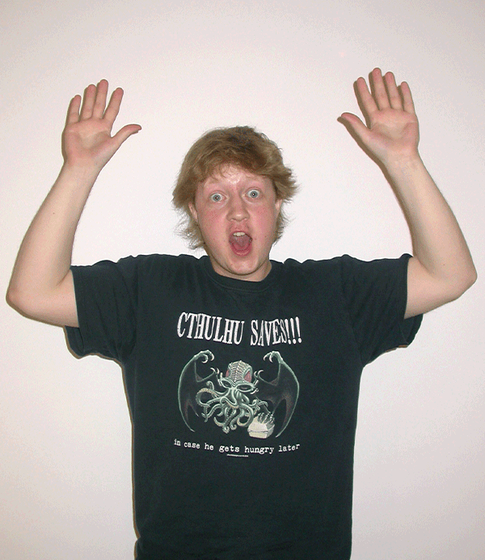
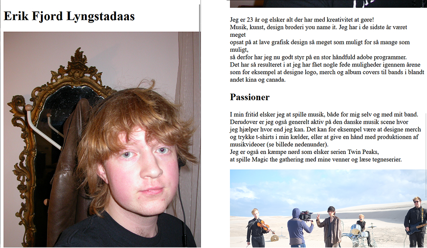
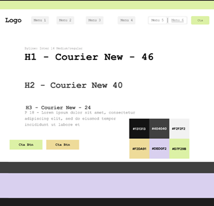
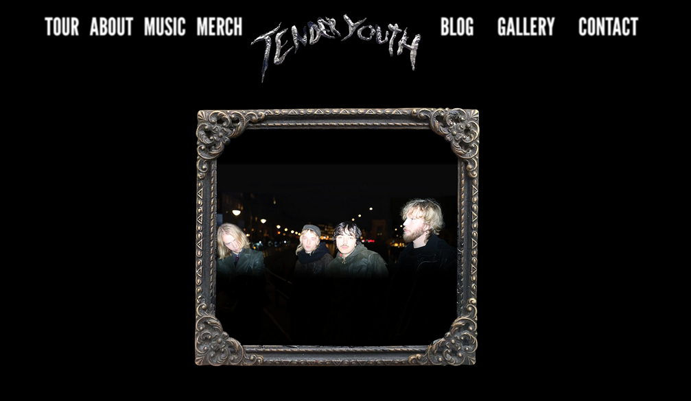
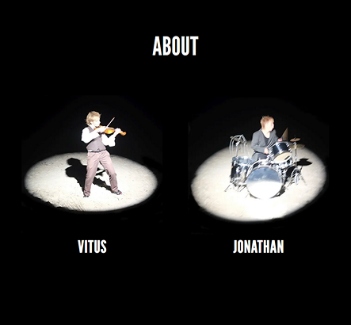
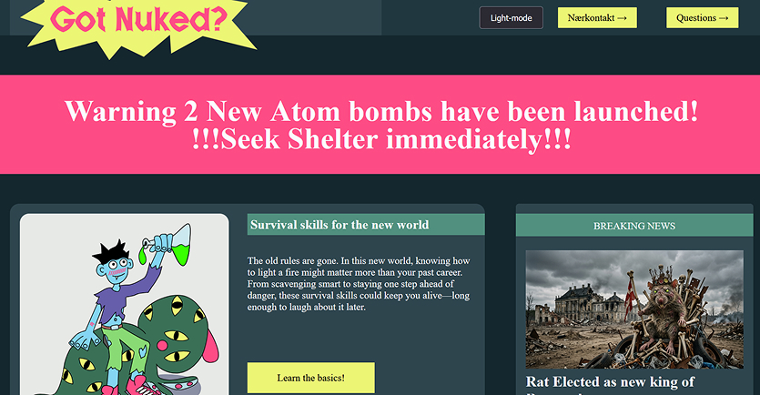
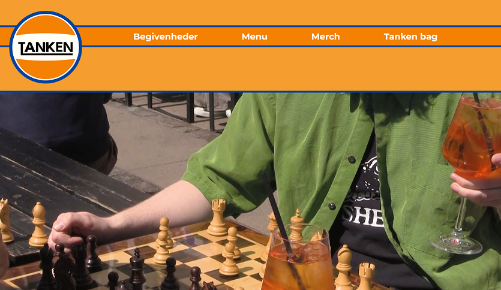

Erik Fjord Lyngstadaas

Portfolio for første semester af multimedie design på EK lavet af mig.Portfolio for første semester ad multimedie deisgn på EK lavet af mig. Portfolio for første semester ad multimedie deisgn på EK lavet af mig. Portfolio for første semester af multimedie design på EK lavet af mig.Portfolio for første semester ad multimedie deisgn på EK lavet af mig. Portfolio for første semester ad multimedie deisgn på EK lavet af mig.
Tema 1
Introuge
Vi fik til opgave at producere en lille introduktions video som fortalte lidt om gruppens medlemmer samt et personligt “præsentationskort” som skulle laves i figma. Derudover var der flere præsentationer som introducerede uddanelsen og hvad man kan ende med at lave efter den.


Tema 2
Grundlæggende web
Dette tema var vores første kig på html og css, igennem flere opgave små sites fik vi lært om grids, flere linkede html dokumenter og billedbehandling Visitkort side, Styletile implementering, gridøvelser og første hjemmeside med flere sider, billedbehandling


Tema 3
Grundlæggende UX/UI
Dette tema var vores første kig på html og css, igennem flere opgave små sites fik vi lært om grids, flere linkede html dokumenter og billedbehandling Visitkort side, Styletile implementering, gridøvelser og første hjemmeside med flere sider, billedbehandling

Tema 4
Grundlæggende brugergrænsefladeudvikling
Dette tema var vores første kig på html og css, igennem flere opgave små sites fik vi lært om grids, flere linkede html dokumenter og billedbehandling Visitkort side, Styletile implementering, gridøvelser og første hjemmeside med flere sider, billedbehandling

Tema 3
Grundlæggende UX/UI
Dette tema var vores første kig på html og css, igennem flere opgave små sites fik vi lært om grids, flere linkede html dokumenter og billedbehandling Visitkort side, Styletile implementering, gridøvelser og første hjemmeside med flere sider, billedbehandling